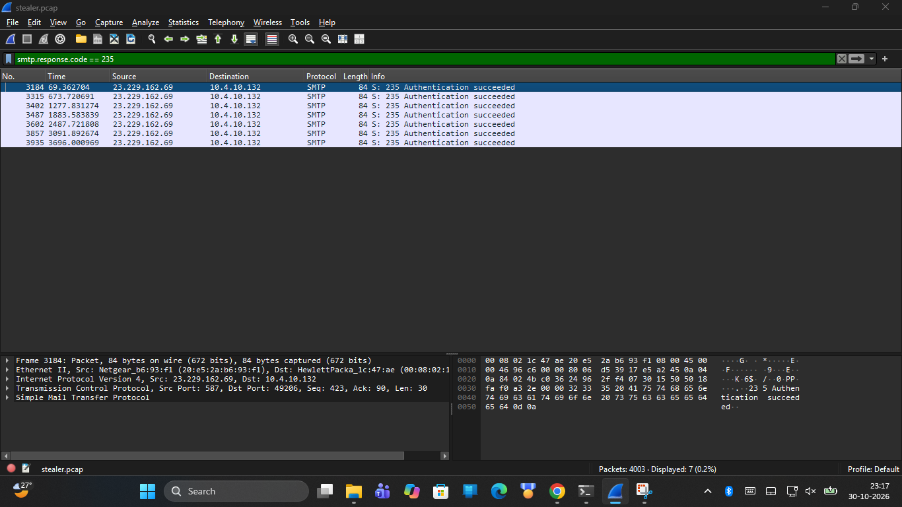

Cybersecurity SOC Analyst Internship Capstone
Student Intern: Aiswarya | B.Tech in Artificial Intelligence & Data Science | Jyothi Engineering College
Interactive Custom SIEM Dashboard (Task 6)
Locally Running Dashboard Application | 79 Normalized ECS Events (Project Dataset) | Lightweight Python Backend (< 30 MB RAM)

Detection Engineering & Rule Validation (Task 2)
Custom Detection Rules & Offline Configurations: Sigma YAML, ElastAlert 2, and Elasticsearch 8.x Query DSL
Cardinality aggregation detecting > 5 distinct user failures from 1 source IP.
Detects high-entropy base64 encoded TXT payloads over port 53.
Regex matching encoded script flags (-enc, -EncodedCommand).
sample-events.jsonl — triggered exactly 4 alerts (1 credential stuffing, 2 DNS tunneling, 1 PowerShell encoded command).
0 False Positives on Benign Events
Root-Cause Threat Forensics (Tasks 4 & 5)
CyberDefenders HawkEye (4,003 Packets) & HackTheBox Sherlock "Brutus" (auth.log / wtmp)
tkraw_Protected99.exe from Frame 207 HTTP stream.• Reconnaissance: Queried
bot.whatismyipaddress.com returning victim NAT IP 173.66.146.112.• 7-Cycle Exfiltration: Strict ~10-min cadence (604s–606s) to
macwinlogistics.in:587 (IP 23.229.162.69) via cleartext Base64 AUTH.

65.2.161.68 executed 48 failed logins in 9 seconds.• Compromise & Session: Root password guessed at 06:32:44 UTC, spawning interactive Session 37.
• Backdoor & Timezone: Backdoor user
cyberjunkie added to sudo group; normalized UTC wtmp epoch.

Multi-Stage APT Simulation & SOAR Handover (Task 3)
5-Stage Kill Chain Detection, TheHive 5 Case Templates, MISP Event JSON, and YARA Rules
apt_training_marker.yar for host scanning.Internship Synthesis & Technical Competencies
ElevanceSkills Cybersecurity SOC Analyst Internship Capstone Completion
• Linux Syslog & utmp/wtmp Binary Analysis
• Sigma, ElastAlert & Elastic Query DSL
• Custom ECS Telemetry Dashboarding
• High-efficiency detection under strict RAM limits
• Statistical inter-arrival beaconing correlation
• Rigorous evidentiary classification
• Verified Seven-Cycle PCAP Datasets
• Complete Evidence Integrity Catalogs
• Tested SIEM Correlation Rules
Aiswarya — Undergraduate in Artificial Intelligence & Data Science | Jyothi Engineering College (Autonomous)